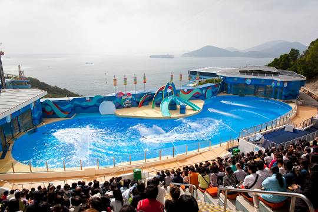
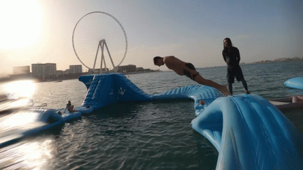

|  |  |
Ocean Park Hong Kong, commonly known as Ocean Park, is a marine mammal park, oceanarium,
animal theme park and amusement park situated in Wong Chuk Hang and Nam Long Shan in the Southern District of Hong Kong.
It is the second largest theme park in Hong Kong, after Hong Kong Disneyland,[2] as well as the largest theme park in Hong Kong by area.
It is also the second oldest theme park in Hong Kong, after the now-defunct Lai Chi Kok Amusement Park which closed on 31 March 1997,
four months before the 1997 handover.
Opened on 10 January 1977, Ocean Park became popular, but 28 years later, it was unprofitable and widely expected to close due to the new Hong Kong Disneyland.
However, the Park responded with a HK$5.5 billion development plan that saw it expand to over 80 attractions and rides, and steadily grow visitor numbers to 7.6 million in 2014,
making it the world's 13th most visited theme park, and one of the largest theme parks in Asia.[6][7] Half of all visitors now come from mainland China, in growth that parallels
rising mainland tourist visitor levels to Hong Kong over the same period.ring an area of 91.5 hectares (226 acres), the park is separated by a large mountain into two areas,
The Summit (Headland) and The Waterfront (Lowland). These areas can be reached by a 1.5 kilometres (0.93 mi) cable car system, or the Ocean Express funicular railway.
To ascend the Headland, which comprises several hills, visitors can use Hong Kong's second longest outdoor escalator.[9] The theme park has various attractions and rides,
including four roller coasters, and also animal exhibits with different themes, such as a giant panda habitat, rainforest and polar displays, as well as an aquarium featuring the world's largest aquarium dome.
Between 1979 and 1997, Ocean Park was most famous for its signature killer whale, Miss Hoi Wai/Susie Wong.As well as being an amusement park, Ocean Park Hong Kong aims to merge entertainment and education,
including conservation advocacy. However, it has been criticised by wildlife advocates for practices including the wild capture of large sea animals, such as dolphins and orca, and the presentation of shows featuring such animals performing.
Ocean Park is also renowned for holding the largest Halloween events in Asia.
(Source:https://en.wikipedia.org/wiki/Ocean_Park_Hong_Kong)
« Previous
Next »